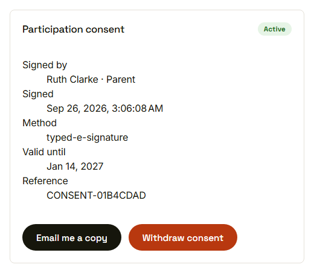
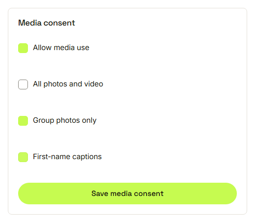
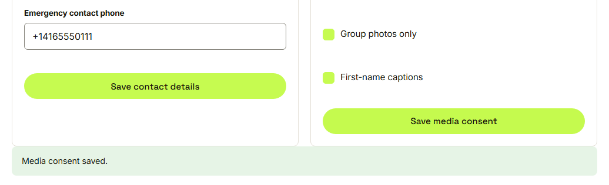
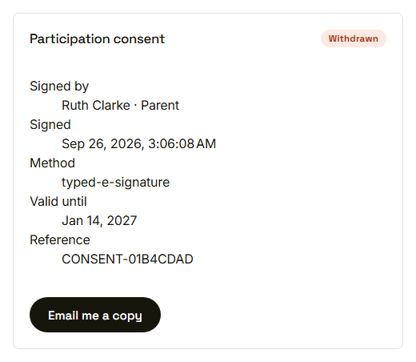

Waypoint · Video 059
Managing consent settings
See it, choose media options, withdraw if needed
What Ruth signed

Participation consent, read only
Optional media choices

Each option is separate
Saved

Media consent saved
Withdrawn, with the record kept

The record stays; the Withdraw button is gone
Things to remember
Participation consent is read only
Media choices are optional and saved one by one
Withdrawing needs a confirmation
Guardians see only their own record